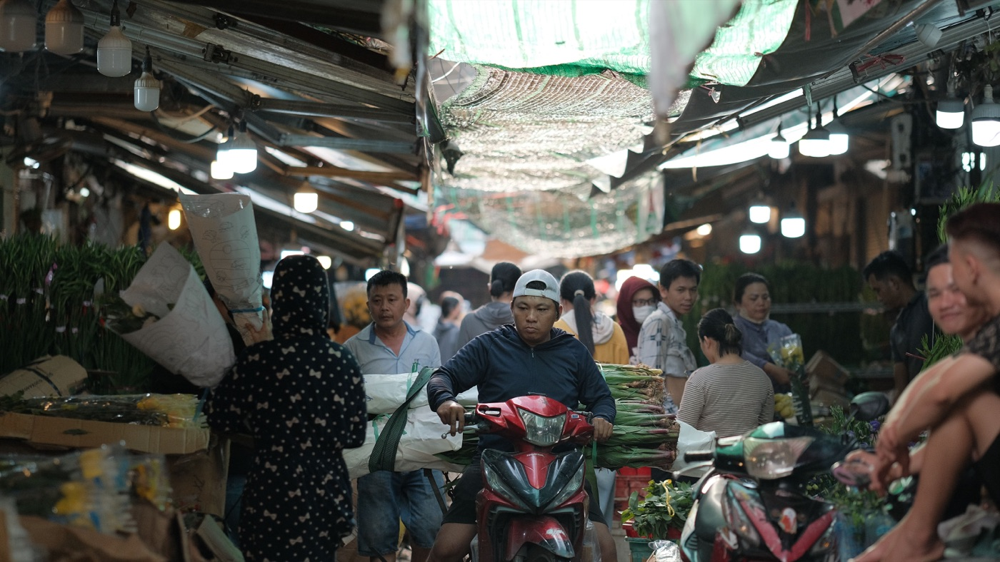
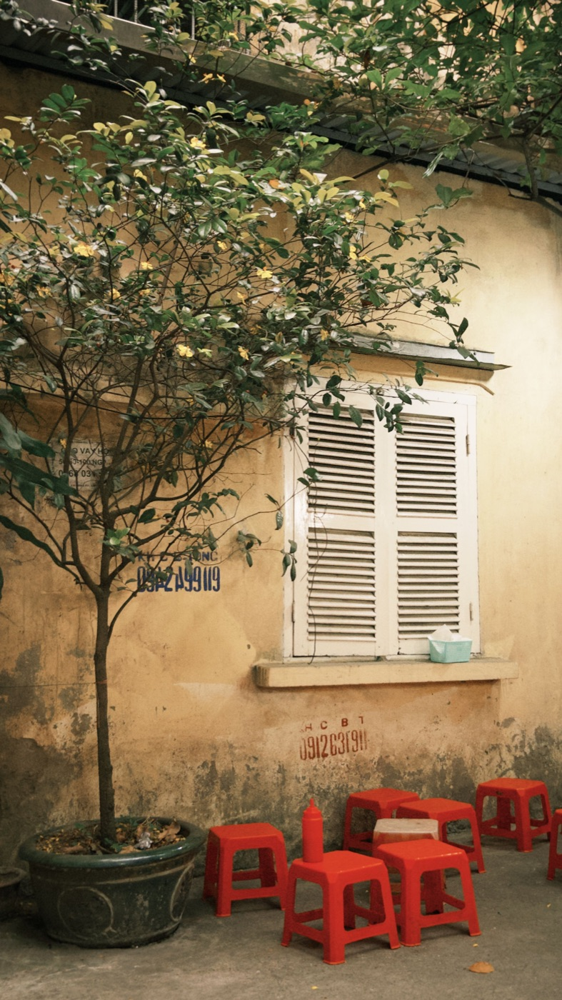

Как безопасно выезжать с парковки на байке

Первые метры поездки часто проходят в самом тесном месте: между припаркованными байками, пешеходами и движущимся потоком. Не начинай движение одновременно с запуском двигателя. Сначала подготовь байк, оцени обзор и только затем включайся в дорогу.
До запуска двигателя
Надень и застегни шлем, убери телефон, закрепи сумку и проверь, что подножка сложена. Осмотри пространство возле колёс: рядом могут лежать замок, пакет или низкое препятствие. Выкатывать байк из плотного ряда часто безопаснее пешком при выключенном двигателе.
Проверь обе стороны
Зеркала помогают, но стены, машины и ворота создают слепую зону. Подъедь к границе тротуара медленно, остановись и посмотри в обе стороны. Учитывай не только машины, но и байки, велосипеды и пешеходов, которые движутся ближе к краю дороги.

Тротуар принадлежит пешеходам
Не разгоняйся по тротуару и не используй сигнал как требование освободить путь. Пропусти людей, детей и коляски. Если выезд имеет высокий порог или мокрую плитку, проходи его почти прямо, без резкого газа и торможения на самом препятствии.
Как включаться в поток
- Выбери достаточный промежуток, не заставляющий других резко тормозить.
- Покажи направление поворотником.
- Ещё раз проверь слепую зону коротким поворотом головы.
- Начни движение плавно и займи предсказуемую траекторию.
- После включения набери скорость потока без резкого ускорения.
Если подходящего промежутка нет, продолжай ждать. Сигнал другого водителя не всегда означает, что путь полностью свободен — решение принимаешь по фактической обстановке.
Выезд задним ходом
У скутера нет обычного заднего хода, поэтому планируй парковку заранее. Лучше поставить байк так, чтобы при отъезде выкатывать его назад пешком и начинать движение уже лицом к дороге. Не пытайся одновременно толкать тяжёлый байк, держать телефон и контролировать поток.
Ночь и дождь
Включи свет до выезда, протри визор и зеркала. На мокрой плитке ноги и колёса могут скользить, а водитель на дороге позже замечает байк из тёмного двора. Увеличь время ожидания и не выезжай перед транспортом только потому, что расстояние кажется привычным.
Короткий вывод
Безопасный выезд — это подготовленный байк, остановка у границы обзора и достаточный промежуток в потоке. Не торопись в первые секунды. О настройке обзора читай в статье про зеркала, а о городской стоянке — в материале про парковку в Нячанге.